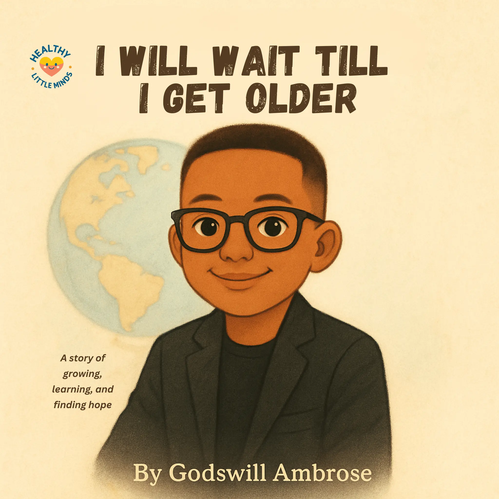

Care
Listening, comforting, helping, and remembering what matters to someone.
Explore a feeling
Love can feel warm, safe, and connected. It grows through caring words and actions while always respecting each person's body, space, and choices.
Listening, comforting, helping, and remembering what matters to someone.
Knowing you matter, even when you make mistakes or have big feelings.
Kind love accepts "no," asks permission, and gives safe space.

A story about finding home in love, belonging, and hope.
Read the book
A reassuring story about support and feeling loved during overwhelming emotions.
Read the book